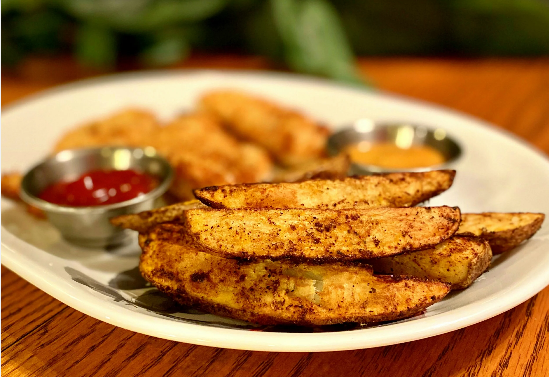

Perfectly crisp and seasoned potato wedges straight out of your air fryer. It doesn't get any easier than this!
Ingredients
Directions
1. Preheat air fryer to 200 C
2. Place potato wedges in a large bowl. Mix in olive oil and sea salt.
3. Put potato wedges into the air fryer and cook for 10 minutes
4. Flip and cook for additional 5 minutes